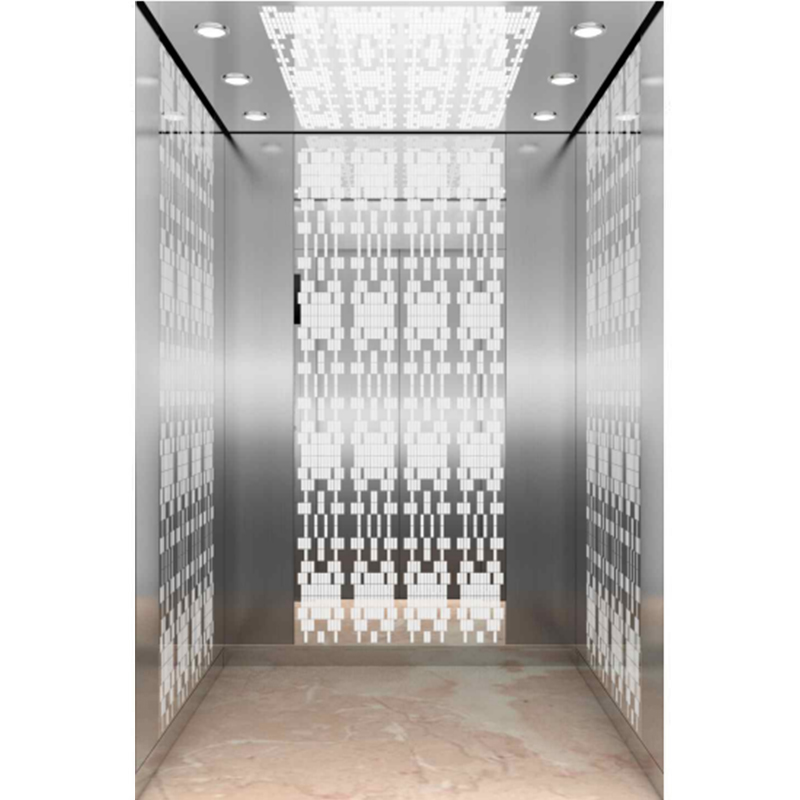

Проектирование
Проект — без отдельной оплаты
При заключении договора на поставку и монтаж лифтового оборудования. Состав проектных работ включаем в комплексное предложение по вашему объекту.
Условие: договор поставки и монтажаВысотные ЖК · Бизнес-центры · МФК
Российские и зарубежные лифты для высотных проектов. Подбираем оборудование, проектируем, поставляем и монтируем, помогаем с вводом в эксплуатацию. Весь комплекс — у одного подрядчика.
Пришлите ТЗ — получите КП с комплектацией и стоимостью оборудования и работ.
ЩЛЗКМЗMETEORFUJISTARSJECIFEСравнить оборудование ↓ЛифтКомфортСервис · с 2018 года · поставки по России

Из каталога IFE. Модель, отделку и комплектацию согласуем под ваш проект.
01 / Выгоды комплексного договора
От подбора до работающего лифта — одна компания ведёт техническую и монтажную части проекта. Для вас это понятный состав работ и меньше отдельных подрядчиков, которых нужно координировать.
Проектирование
При заключении договора на поставку и монтаж лифтового оборудования. Состав проектных работ включаем в комплексное предложение по вашему объекту.
Условие: договор поставки и монтажаСтоимость комплекса
В одном КП видны оборудование, поставка и монтаж. Можно сопоставить состав предложений и понять, какие работы включены в расчёт.
Стоимость по реальному объёму работКомплектация
Каждый лифт комплектуется основным ЗИП. Перечень запасных частей закрепляем в спецификации выбранного оборудования.
Состав ЗИП — в спецификацииДоговор
Рассмотрим договор заказчика: технические требования, график, оплату и приёмку. Возможность работы определяется содержанием документа.
Учитываем порядок закупки заказчика02 / Высокоскоростное оборудование
В одной подборке — оборудование шести производителей: от исполнений КМЗ до 4 м/с до сертифицированных лифтов ЩЛЗ на 8 м/с. Сравнивайте скорость, высоту подъёма и нагрузку, чтобы выбрать оборудование под здание.
Официальные поставки от заводов · подбор и монтаж в одном комплексе
Россия · Высокоскоростные исполнения
Щербинский завод сертифицировал пассажирские лифты на 4 и 8 м/с. Исполнение на 8 м/с разработано для жилых и административных зданий высотой от 200 м.
Показана иллюстрация из сообщения завода, а не фотография конкретной комплектации на 8 м/с.
Россия · Пассажирские лифты
В линейке «Альтиус» предусмотрены исполнения со скоростью до 4 м/с. Для жилых, офисных и общественных зданий — с выбором отделки кабины и схемы установки.
Параметры приведены по карточке «Альтиус». Скорость и схема установки относятся к выбранному исполнению.
METEOR Lift · Высокоскоростная серия
S-Speed — серия для высотных и сверхвысотных зданий: жилых комплексов, офисов и гостиниц. В ассортименте METEOR Lift представлены исполнения на 5–7 м/с.
До 64 остановок; с машинным помещением. Страна изготовления определяется по документам выбранного оборудования.
Китай · Пассажирские лифты
В линейке STAR ELEVATOR GROUP / FUJISTAR — пассажирские лифты для жилых и коммерческих зданий со скоростью до 6 м/с. Подберите оформление кабины под архитектуру объекта.
* Верхний предел общей линейки — 6 м/с. Конкретные скорость, нагрузка и высота подъёма зависят от серии.
Китай · Высокоскоростная серия
В заводском каталоге SJEC серия E800 представлена со скоростью 5–10 м/с. Пассажирские лифты с верхним машинным помещением для высотных объектов.
* По заводскому каталогу SJEC; актуальное исполнение входит в спецификацию проекта. На фото — варианты отделки SJEC, без привязки к E800.
Китай · Высокоскоростная серия
Высокоскоростная серия с исполнениями 3–6 м/с. В каталоге указаны параметры подъёма, нагрузки и требования к установке.
* 3–4 м/с: до 200 м, 800–2000 кг. 5–6 м/с: до 300 м, 1350–2000 кг. Характеристики разных исполнений каталога IFE.
Изображения помогают выбрать оформление. Их источники и подписи указаны в каждой карточке; каталожный вид кабины не заменяет спецификацию оборудования.
Приведены данные производителей для разных серий и исполнений. Максимальные скорость, нагрузка и высота не всегда доступны одновременно. В предложение по объекту входит конкретная модель с подтверждёнными параметрами и условиями поставки.
Скорость и высотаНоминальная скорость, высота подъёма и количество остановок.
Кабина и нагрузкаГрузоподъёмность, размеры кабины, количество лифтов и отделка.
Условия установкиРазмеры шахты, приямок, верхний этаж и готовность объекта.
Турция · Скоростное оборудование
В опубликованном заводом сертификате: AME-MR с машинным помещением — до 3 м/с; AME-MRL без машинного помещения — до 2,5 м/с. Отдельный вариант, если проекту подходит этот диапазон.
Документы производителя ↗Беларусь · Опыт монтажа
В опыте ЛифтКомфортСервис — монтаж оборудования Могилёвлифтмаш. Новое исполнение на 4 м/с пока не включено в эту подборку: его доступность для проекта требует подтверждения.
03 / Состав предложения
Готовим КП по вашему ТЗ: модель и комплектация, поставка, монтаж и сопутствующие работы. В предложении видно, за что вы платите и что входит в комплекс.
Структура предложения по вашему объекту
Тип здания, параметры шахт и требования к лифтам
Модель, количество, комплектация и отделка
Поставка, монтаж, включения и исключения
График, оплата, гарантия и порядок приёмки
Схема для согласования прототипа. Реальное КП рассчитывается по вашему техническому заданию.
Параметры шахт, высота подъёма, остановки и требования к кабине становятся основой проектного решения.
В предложении указаны модель, количество лифтов, исполнение и состав поставки, включая основной ЗИП.
Работы рассчитываются с учётом готовности объекта. При замене в предложение включается необходимый объём демонтажа.
После монтажа сопровождаем ввод оборудования в пределах предусмотренного договором объёма.
Состав поставки, включения и исключения, стоимость и этапы работ фиксируются до договора. Изменения технического задания рассматриваются отдельно.
04 / Компания и условия работы
ЛифтКомфортСервис — мультибрендовая компания из Москвы. Соединяем подбор оборудования и проектирование с поставкой, монтажом и сопровождением ввода, в том числе на сложных объектах.
Компания основана специалистами с опытом в лифтовой отрасли.
Поставляем оборудование заказчикам по России.
Гарантия на оборудование и выполненные работы. Условия — в договоре.
FUJISTAR · ЩЛЗ · КМЗ · Могилёвлифтмаш · Метеор
Общие ориентиры компании. График высокоскоростного исполнения зависит от модели, изготовления и готовности объекта; доступность выезда, монтажа и сервиса — от региона. Для российского оборудования общий ориентир поставки — от 30 дней.
Нужно оценить условия установки на площадке? Запросите выезд специалиста на ваш объект.
05 / Опыт комплексных поставок
В публичном портфолио ЛифтКомфортСервис представлены жилые комплексы «Серебро» и «Облака 2.0». Эти проекты показывают общий опыт компании в комплексных поставках.
Поставка и монтаж
Поставка и монтаж
Есть объект с похожей задачей? Передайте проект — начнём с расчёта оборудования и работ.
06 / Порядок работы
У каждого этапа есть результат: предложение, договор, поставка, монтаж и комплект предусмотренных документов. Техническая и монтажная части связаны в одном процессе.
Вы передаёте проект или параметры здания. Мы определяем комплектацию и состав работ для расчёта.
Вы получаете модель, состав поставки и работ, стоимость и условия. Есть основа для сравнения предложений.
В договоре и спецификации закреплены комплектация, график, этапы оплаты и приёмка. Организуем поставку оборудования.
Выполняем монтаж и пусконаладку. Передаём предусмотренные договором акты выполненных работ.
Помогаем с вводом оборудования в эксплуатацию и передаём предусмотренные документы.
07 / Проверка условий
Предмет сделки закрепляется в договоре и спецификации. Это даёт опору для проверки поставки и приёмки работ.
В спецификации — выбранная модель, её параметры, исполнение кабины и состав оборудования с основным ЗИП.
В договоре — стоимость, размер предоплаты, этапы оплаты, поставки и приёмки. Рассматриваем форму договора заказчика.
Гарантия предусмотрена на оборудование и работы — до 5 лет. Конкретное покрытие и организация сервиса определяются для модели и региона.
Если закупка требует банковской гарантии, обозначьте это в запросе. Возможность и условия рассматриваются отдельно.
08 / Вопросы закупки
Ответы на вопросы о комплектации, стоимости, предоплате, сроках и эксплуатации.
Да. ЩЛЗ сообщил о сертификации лифта на 8 м/с, а КМЗ предлагает исполнения до 4 м/с. Поэтому российские заводы включены в основной выбор наравне с зарубежными решениями. Параметры, сроки и состав поставки определяются для конкретного оборудования.
Для высотных проектов рассматриваем ЩЛЗ, КМЗ, METEOR S-Speed, FUJISTAR, SJEC E800 и IFE METIS-HS. AME представлен как отдельный скоростной вариант до 3 м/с. Опыт монтажа также включает Могилёвлифтмаш. Выбор определяется параметрами здания и конкретного исполнения.
Параметры модели и состав поставки должны соответствовать ТЗ и спецификации: скорость, грузоподъёмность, высота подъёма, шахта, кабина и основной ЗИП. Каталожное фото помогает выбрать оформление, но не заменяет технический документ.
Предоплата, последующие платежи и приёмка закрепляются в договоре вместе с комплектацией и графиком. Рассматриваем форму договора заказчика. Требование банковской гарантии нужно указать при обращении; её доступность рассматривается отдельно.
Да. Начните с назначения и высоты здания, количества лифтов и известных параметров шахт. Скорость выбирается вместе с грузоподъёмностью и другими требованиями системы.
Да. Передайте ТЗ, чертежи или ссылку на материалы и контакт. На их основе подготовим КП с моделью, комплектацией, оборудованием и работами. Если исходных данных недостаточно для расчёта, сообщим, чего не хватает.
Стоимость определяется моделью, высотой подъёма, остановками, отделкой, доставкой и объёмом монтажа. По ТЗ вы получите предметное предложение на оборудование и работы. Проектирование — без отдельной оплаты при договоре поставки и монтажа.
Общие ориентиры компании: китайские лифты — от 90 дней, российские — от 30 дней; монтаж — от 30 дней. Это не единый срок любой высокоскоростной поставки: график зависит от исполнения, изготовления, логистики и готовности объекта.
До 5 лет на оборудование и работы. Конкретный срок, покрытие и условия фиксируются для выбранного оборудования и состава договора.
Да, рассматриваем форму договора заказчика. Возможность работы и итоговые условия определяются содержанием документа.
Контакт для ответа, тип и город объекта. При наличии приложите ТЗ, планы шахт, чертежи или фотографии. Неизвестные технические параметры не мешают начать подбор.
Организация сервиса зависит от модели и региона. До начала работы определяются исполнитель, порядок обращения и состав поддержки. Укажите регион объекта, чтобы включить этот вопрос в проработку предложения.
09 / Ваш проект
Передайте ТЗ или кратко опишите здание. Результат обращения — предложение с оборудованием, комплектацией, стоимостью и составом работ.
Есть проект — передайте файл или ссылку. Нет ТЗ — начните с контакта, города и задачи. Заполнять неизвестные параметры не нужно.
Демоформа. Данные и файлы никуда не отправляются.